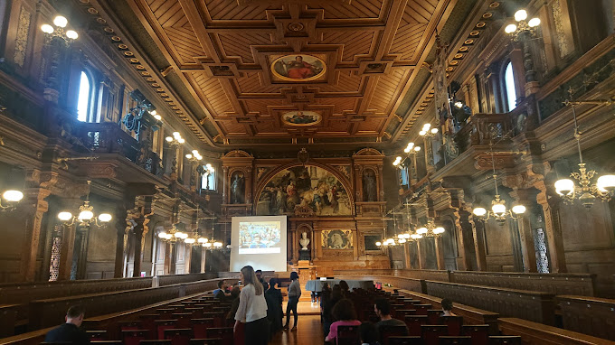

The Hall of the Old University is used today mainly for academic celebrations like the traditional annual festival of the University and the beginning of each winter semester. It is also used as a venue for concerts, readings, presentations, and celebrations, especially awards of cultural prizes. Students were incarcerated in this structure as punishment until the early twentieth century.
 Cheesesteak map.